Dual Job
A Dual Job lets you use skills from a second job line while you keep your own job.
- Each skill unlocks one level at a time as your Dual Job Level goes up. In the game's Dual Job window, skills whose maximum level differs from the original job's are shown in red.
Requirements
- Your character must be reborn (High Emil, High Titania or High Dominion) and have a Chronicle job (third job).
- Level 110 and Job Level 50.
How to unlock
-
Go to Endless Corridor B41F and talk to Fraise.
Fraise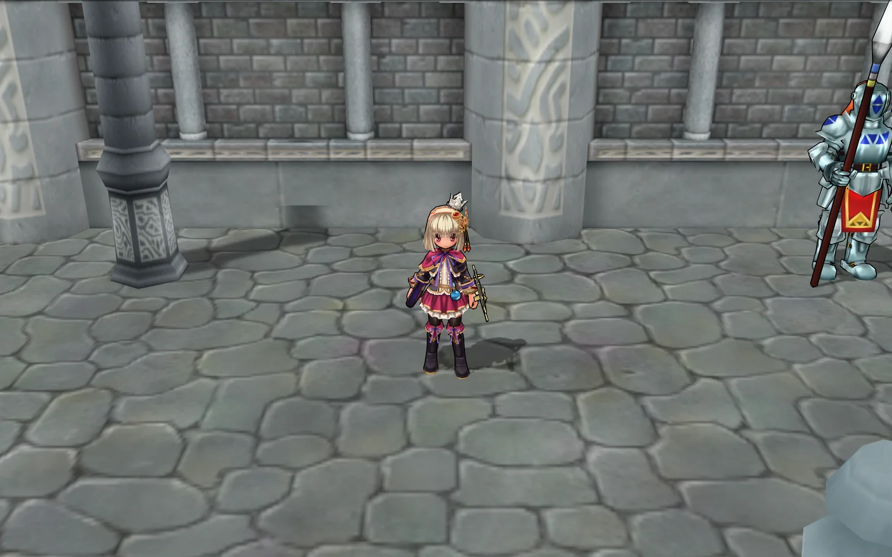
-
Go with her to the Endless Corridor (Back Layer). Talk to Fraise again next to the Insmouse Statue at the entrance and read the statue.
Insmouse Statue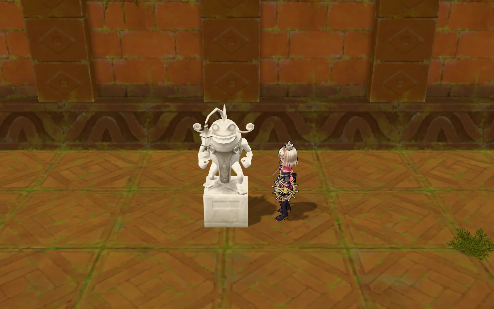
-
Explore the floor to its exit. The level 110 monsters there drop four colours of jewel. Collect 10 of each colour. Fraise gives you 1 of each when you meet her at the exit.
 Red Jewel
Red Jewel- Blue Jewel
 Yellow Jewel
Yellow Jewel- Green Jewel
-
Take the warp to the Endless Corridor (Arcane Art). Talk to the Mysterious Object in the middle of the room: it trades 10 Jewels of one colour for 1 Large Jewel.
Mysterious Object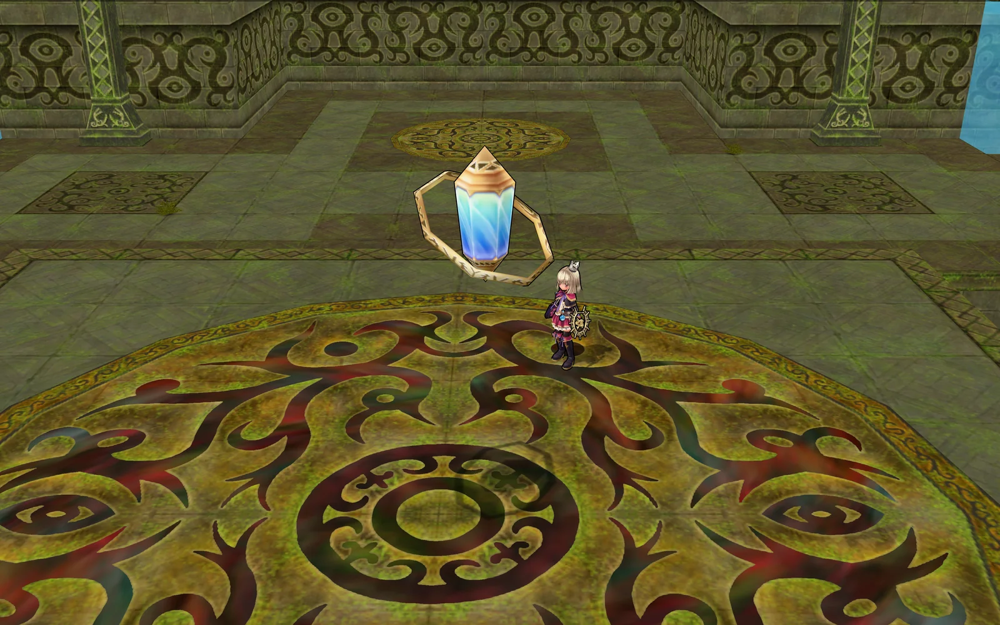
-
Set each Large Jewel in the statue of the same colour:
- Large Red Jewel → Salamander Statue
- Large Green Jewel → Mandragora Statue
- Large Yellow Jewel → Electell Statue
- Large Blue Jewel → Insmouse Statue
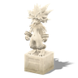
Salamander Statue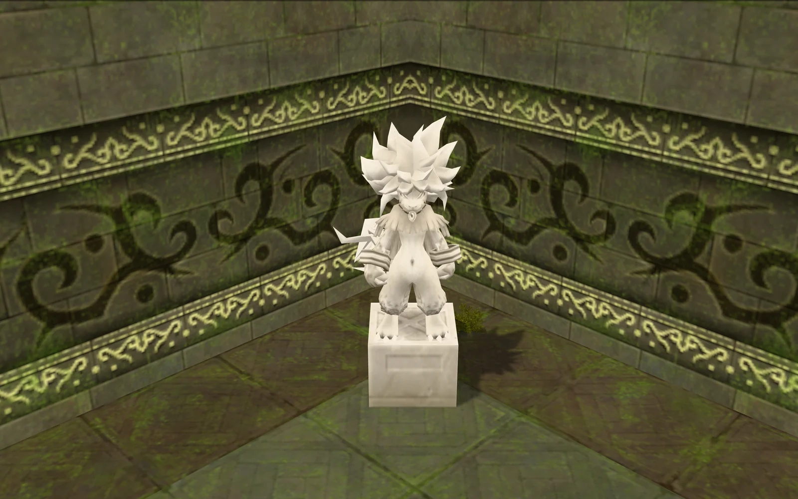
Mandragora Statue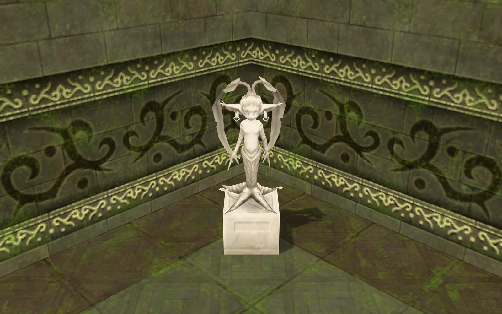
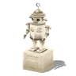
Electell Statue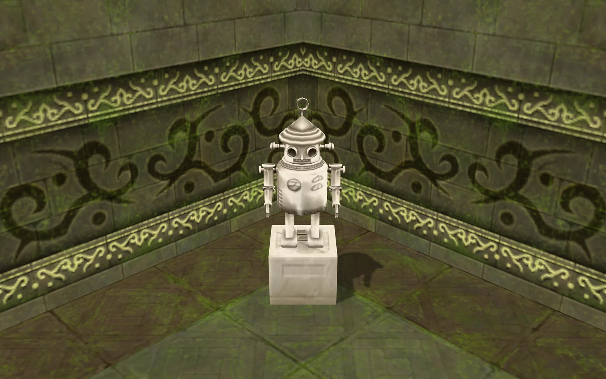
 Insmouse Statue
Insmouse Statue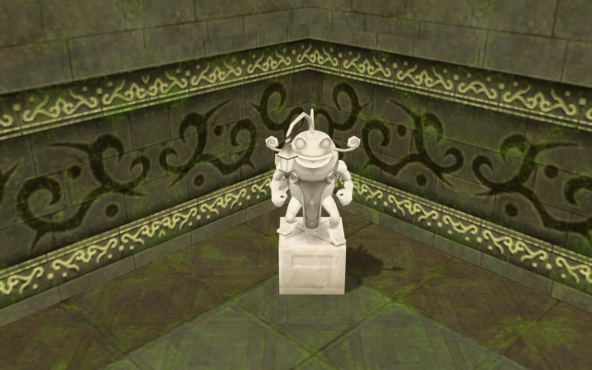
-
Go back to the middle. Orthos appears. Accept his quest: he sends you to a private area to fight him. He uses both Swordsman and Warlock skills.
 Orthos
Orthos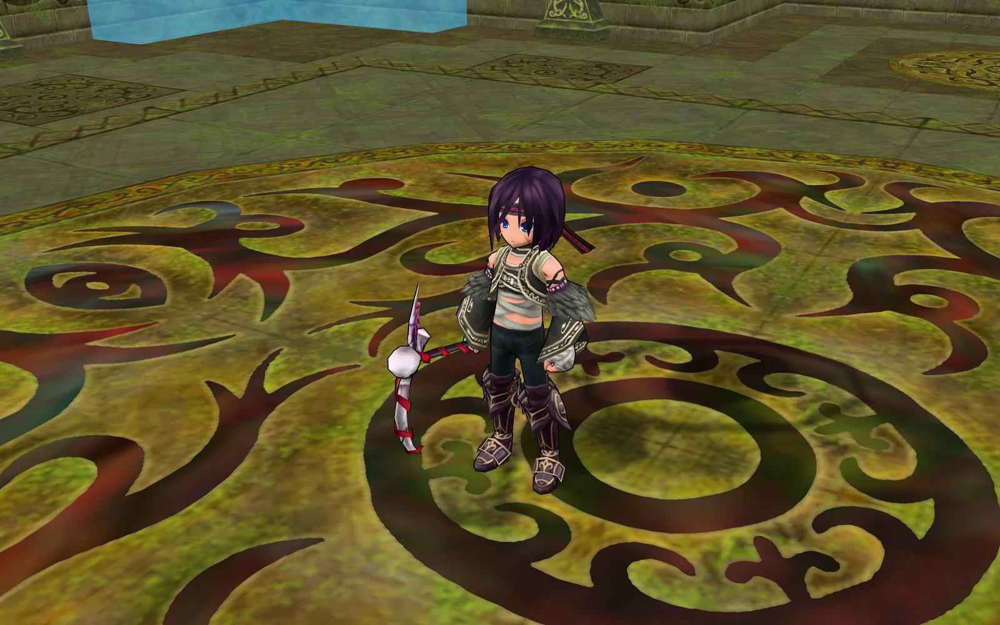
-
After you win, report to Orthos and choose your Dual Job system.
After you unlock it
- Your Job Level is shown as the Dual Job's Job Level, starting at 1, with a cap of 110.
- You also get the job bonus of the system you chose, and you can wear the equipment of that system's Chronicle job.
- Set up to 10 skills in the Selected Skills box (drag or double-click). They appear in the Dual tab of the skill window. You can change them as often as you like.
- If your main job and Dual Job share a skill, the higher skill level is used.
- To change which skills you can use, talk to Orthos on Endless Corridor B41F, or use a Book of Conversion. After an event, an NPC in Uptown gives the book.
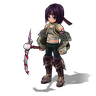
Orthos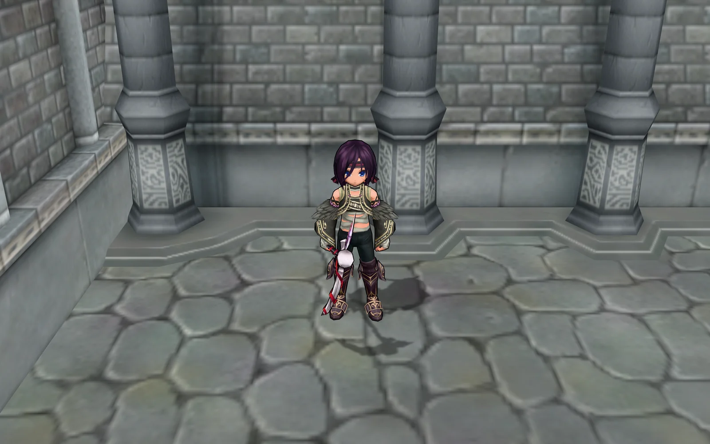
- You can only have one system at a time. Each system keeps its own Dual Job EXP, so changing systems doesn't lose progress.
- The Joker line can't be taken as a Dual Job. A Joker can still take another system.
- You can take your own job's system, for example Swordsman as a Gladiator.
- A Merchant Dual Job doesn't let you open a stall without a golem.
More systems to switch to
You can unlock more systems and then switch between them with Orthos or the Book of Conversion. The current one is marked with a ☆.
- To start the event, you need all of these:
- You can enter the Abyss floors of the Endless Corridor.
- A Book of Conversion from the NPC in Uptown.
- A Dual Job.
- Start it at the NPC who gives the Book of Conversion.
Systems
- There are 12 systems. Each system gives you skills from its 4 jobs and a bonus to 3 stats.
Archer System
Overview
- Jobs
- Archer
- Striker
- Gunner
- Hawkeye
- Stat bonus
- INT
- STR
- AGI
Skills
Archer
| Skill | Dual Job level needed for skill level | ||||
|---|---|---|---|---|---|
| Lv 1 | Lv 2 | Lv 3 | Lv 4 | Lv 5 | |
| Throwing Weapon Construction | 1 | 2 | 45 | 47 | 50 |
| Increase Maximum HP | 1 | 6 | 11 | 16 | 21 |
| Increase HP Regeneration | 1 | 6 | 11 | 16 | 21 |
| Increase Maximum SP | 1 | 7 | 12 | 17 | 22 |
| Increase SP Regeneration | 1 | 7 | 12 | 17 | 22 |
| Merciless Blow | 1 | 4 | 8 | 12 | 16 |
| Head Blow | 3 | 8 | 13 | 16 | 19 |
| Bow Mastery | 5 | 15 | 25 | 35 | 50 |
| Dagger Mastery | 5 | 15 | 25 | 35 | 50 |
| Mace Mastery | 5 | 15 | 25 | 35 | 50 |
| Wrist Blow | 9 | 13 | 17 | 23 | 27 |
| Leg Blow | 9 | 13 | 17 | 23 | 28 |
| Banishing Blow | 9 | 13 | 19 | 24 | 29 |
| Archer's Aura | 10 | 20 | 30 | 40 | 50 |
| Concentration | 10 | 18 | 26 | 31 | 36 |
| Focused Arrow | 14 | 18 | 20 | 32 | 37 |
| Blaze Arrow | 22 | 28 | 34 | 38 | 43 |
| Aqua Arrow | 23 | 29 | 35 | 39 | 44 |
| Terra Arrow | 24 | 30 | 36 | 40 | 45 |
| Zephyr Arrow | 25 | 31 | 37 | 41 | 46 |
| Long Range Strategy | 26 | 43 | 44 | 48 | 51 |
| Double Shot | 33 | 38 | 42 | 47 | 49 |
| Piercing Arrow | 33 | 38 | 42 | 47 | 49 |
| Bow Delay Cancel | 35 | 40 | 45 | ||
| Eagle Eye | 41 | 46 | 52 | 57 | 60 |
Striker
| Skill | Dual Job level needed for skill level | ||||
|---|---|---|---|---|---|
| Lv 1 | Lv 2 | Lv 3 | Lv 4 | Lv 5 | |
| Renowned Archer Stance | 1 | 15 | 27 | ||
| Meditation | 14 | 22 | 28 | 33 | 39 |
| Go! | 15 | ||||
| Come Back! | 15 | ||||
| Iron Stomach | 24 | 27 | 29 | 32 | 34 |
| Synergy Force | 42 | 48 | 54 | ||
| Hunting Strategy | 48 | 52 | 54 | 58 | 70 |
| Multi Arrow | 49 | 53 | 56 | 59 | 64 |
| Potion Throw | 51 | 55 | 57 | ||
| Supportive Blaze Arrow | 56 | 59 | 63 | 65 | 68 |
| Supportive Aqua Arrow | 57 | 60 | 64 | 66 | 69 |
| Supportive Terra Arrow | 58 | 61 | 65 | 67 | 70 |
| Supportive Zephyr Arrow | 59 | 62 | 66 | 68 | 71 |
| Powerful Draw | 60 | 64 | 66 | 68 | 72 |
| Beast Training | 63 | 66 | 68 | 71 | 73 |
| Ferocious Bird Training | 63 | 67 | 69 | 72 | 74 |
| Bestial Roar | 64 | 67 | 69 | 72 | 74 |
| Shrieking Bird | 64 | 67 | 69 | 72 | 74 |
| Bestial Wrath | 66 | 68 | 70 | 72 | 74 |
| Ferocious Threat | 66 | 68 | 70 | 72 | 74 |
| Ray of Light | 68 | 73 | 76 | 80 | 82 |
| Dark Sliver | 68 | 73 | 76 | 80 | 82 |
| Exploiting Arrow | 70 | 72 | 74 | 76 | 78 |
| Bestial Blessing | 71 | 73 | 75 | 77 | 79 |
| Arrow Storm | 75 | 78 | 81 | 83 | 87 |
| Arm Cripple | 75 | 78 | 81 | 83 | 88 |
| Arrow Cleave | 81 | 84 | 87 | 89 | 93 |
Gunner
| Skill | Dual Job level needed for skill level | ||||
|---|---|---|---|---|---|
| Lv 1 | Lv 2 | Lv 3 | Lv 4 | Lv 5 | |
| Increase Dual Pistol Accuracy | 30 | 36 | 41 | 46 | 56 |
| Gunmaster | 35 | 40 | 45 | ||
| Pistol Mastery | 50 | 55 | 60 | 65 | 75 |
| Rifle Mastery | 50 | 55 | 60 | 65 | 75 |
| Dual Pistol Mastery | 50 | 55 | 60 | 65 | 75 |
| CQB | 51 | 55 | 62 | ||
| Rapid Fire | 53 | 58 | 61 | ||
| Reckless Fire | 53 | 57 | 59 | 61 | 64 |
| Piercing Shot | 60 | 64 | 66 | 68 | 72 |
| Grenade Shot | 63 | 68 | 73 | ||
| Iron Armor Shot | 65 | 70 | 75 | ||
| Tear Bomb | 65 | 70 | 75 | ||
| Slow Grenade | 67 | 75 | 80 | ||
| Over Range | 70 | 81 | 90 | ||
| Stun Shot | 70 | 72 | 74 | 76 | 78 |
| Burst Shot | 71 | 73 | 75 | 77 | 79 |
| Bullet Dance | 74 | 75 | 77 | 78 | 81 |
| Scatter Bullet | 74 | 75 | 77 | 79 | 85 |
| Vital Shot | 75 | 78 | 81 | 83 | 85 |
| Cross Crest | 76 | 79 | 82 | 84 | 92 |
| Absolute Attack | 77 | 80 | 90 | ||
Hawkeye
| Skill | Dual Job level needed for skill level | ||||
|---|---|---|---|---|---|
| Lv 1 | Lv 2 | Lv 3 | Lv 4 | Lv 5 | |
| Flare Shot | 54 | 67 | 93 | 104 | 107 |
| Shooting Mastery | 66 | 94 | 104 | ||
| Change Target | 75 | 81 | 85 | 106 | 109 |
| Weakness Shot | 86 | 92 | 96 | 99 | 103 |
| Tempest Shot | 89 | 102 | 105 | ||
| Revenge Trigger | 91 | 95 | 97 | 99 | 101 |
| No Hate | 94 | 96 | 98 | 100 | 102 |
| Quick Shoot | 95 | 97 | 98 | 101 | 103 |
| Impact Shot | 96 | 100 | 103 | 105 | 106 |
| Search Weak Point | 100 | 108 | 110 | ||
Farmer System
Overview
- Jobs
- Farmer
- Alchemist
- Marionettist
- Harvester
- Stat bonus
- MAG
- INT
- VIT
Skills
Farmer
| Skill | Dual Job level needed for skill level | |||||||||
|---|---|---|---|---|---|---|---|---|---|---|
| Lv 1 | Lv 2 | Lv 3 | Lv 4 | Lv 5 | Lv 6 | Lv 7 | Lv 8 | Lv 9 | Lv 10 | |
| Cultivate Plant | 1 | |||||||||
| Increase Maximum HP | 1 | 5 | 10 | 15 | 20 | |||||
| Increase Maximum SP | 1 | 6 | 11 | 16 | 21 | |||||
| Increase HP Regeneration | 1 | 6 | 11 | 16 | 21 | |||||
| Item Identification | 1 | |||||||||
| Increase SP Regeneration | 1 | 7 | 12 | 17 | 22 | |||||
| Merciless Blow | 1 | 4 | 8 | 12 | 16 | |||||
| Bonfire | 3 | 5 | 7 | |||||||
| Mace Mastery | 5 | 15 | 25 | 35 | 50 | |||||
| Axe Mastery | 5 | 15 | 25 | 35 | 50 | |||||
| Camp | 8 | 10 | 12 | 14 | 16 | 18 | 20 | 22 | 24 | 26 |
| Banishing Blow | 9 | 13 | 17 | 23 | 29 | |||||
| Grass Trap | 10 | 14 | 18 | 24 | 30 | |||||
| Horticulture Craft | 20 | 30 | 40 | |||||||
| Pit Trap | 22 | 28 | 33 | 38 | 43 | |||||
| Tree Fairys Healing Touch | 24 | 29 | 34 | 39 | 44 | |||||
| Cook | 25 | 27 | 31 | 34 | 44 | |||||
| Tailoring | 26 | 32 | 37 | 42 | 45 | |||||
| Increase Axe Accuracy | 30 | 36 | 41 | 46 | 56 | |||||
| Woodwork Repair Kit Craft | 40 | 50 | 60 | |||||||
| Garment Repair Kit Craft | 40 | 50 | 60 | |||||||
| Plant Knowledge | 53 | |||||||||
| Wood Knowledge | 53 | |||||||||
| Bow Construction | 53 | 55 | 56 | 57 | 58 | |||||
| Woodcraft | 55 | 59 | 64 | |||||||
| Item Refining | 55 | 59 | 64 | |||||||
Alchemist
| Skill | Dual Job level needed for skill level | ||||
|---|---|---|---|---|---|
| Lv 1 | Lv 2 | Lv 3 | Lv 4 | Lv 5 | |
| Go! | 3 | ||||
| Come Back! | 3 | ||||
| Sweep Attack | 9 | 13 | 17 | 23 | 29 |
| Iron Stomach | 22 | 28 | 33 | 38 | 43 |
| Increase Reinforcement Chance(MAG) | 30 | 50 | 70 | 85 | 97 |
| Plant Analysis | 45 | 54 | 62 | ||
| Wood Analysis | 45 | 54 | 62 | ||
| Increase Plant Property Damage | 45 | 51 | 58 | 62 | 66 |
| Plant Lesson | 45 | 86 | 90 | ||
| First Aid | 46 | 52 | 57 | 62 | 67 |
| Food Throw | 46 | 52 | 57 | 62 | 67 |
| Increase Potion Value | 47 | 49 | 58 | 63 | 68 |
| Plant Defiler | 47 | 53 | 58 | 63 | 68 |
| Fortify Plant Sheath | 48 | 55 | 59 | ||
| Two-Handed Axe Mastery | 50 | 55 | 60 | 65 | 75 |
| Chemical Preparation | 56 | 59 | 63 | 65 | 68 |
| Bewitching Thorn | 57 | 61 | 64 | 66 | 69 |
| Plant Healing | 58 | 62 | 65 | 67 | 70 |
| Delay Bomb | 60 | 64 | 71 | ||
| Battle Encouragement | 65 | 68 | 70 | 73 | 75 |
| Frantic Efforts | 70 | ||||
| Critical Encouragement | 76 | 78 | 80 | ||
| Chemical Throw | 77 | 79 | 82 | 84 | 85 |
| Alchemist Intuition | 77 | 83 | 85 | ||
| Dust Explosion | 84 | 86 | 88 | 90 | 92 |
| Chemical Plant | 88 | 89 | 92 | 94 | 97 |
Marionettist
| Skill | Dual Job level needed for skill level | ||||
|---|---|---|---|---|---|
| Lv 1 | Lv 2 | Lv 3 | Lv 4 | Lv 5 | |
| Marionette Summon | 2 | 7 | 14 | 19 | 24 |
| Inner Soul | 3 | ||||
| Increase Fairy Property Damage | 45 | 51 | 58 | 62 | 66 |
| Marionette Mastery | 50 | 55 | 60 | 65 | 75 |
| Change Marionette | 55 | ||||
| Marionette Construction | 61 | 64 | 69 | ||
| Monster Taming | 61 | 66 | 71 | 76 | 81 |
| Land Shower | 63 | 66 | 68 | 71 | 73 |
| Sand Tornado | 64 | 67 | 69 | 72 | 74 |
| Blazing Tornado | 66 | 68 | 71 | 73 | 80 |
| Marionette Overload | 68 | 72 | 77 | ||
| Figure Construction | 70 | ||||
| Burning Mist | 71 | 73 | 75 | 77 | 79 |
| Puppet | 74 | 78 | 81 | 83 | 84 |
| Marionette Harmony | 77 | 79 | 82 | 84 | 85 |
| Marionette Discharge | 83 | 85 | 88 | ||
| Management Mastery | 85 | ||||
| Marionette King (Fire) | 87 | 90 | 95 | ||
| Marionette King (Water) | 87 | 90 | 95 | ||
| Marionette King (Wind) | 88 | 91 | 96 | ||
| Marionette King (Earth) | 88 | 93 | 96 | ||
Harvester
| Skill | Dual Job level needed for skill level | ||||
|---|---|---|---|---|---|
| Lv 1 | Lv 2 | Lv 3 | Lv 4 | Lv 5 | |
| Prickle Seed | 54 | 74 | 102 | 104 | 107 |
| Black Rose Thorn | 66 | 78 | 81 | 105 | 108 |
| Create Nekogurumi | 75 | 98 | 106 | ||
| Mistletoe Shot | 85 | 99 | 110 | ||
| Twisted Plant | 89 | 109 | |||
| Harvest Master | 90 | 100 | 101 | 103 | |
Fencer System
Overview
- Jobs
- Fencer
- Knight
- Dark Stalker
- Guardian
- Stat bonus
- VIT
- DEX
- STR
Skills
Fencer
| Skill | Dual Job level needed for skill level | ||||
|---|---|---|---|---|---|
| Lv 1 | Lv 2 | Lv 3 | Lv 4 | Lv 5 | |
| Flying Spear | 1 | 5 | 10 | 15 | 20 |
| Increase Maximum HP | 1 | 6 | 11 | 16 | 21 |
| Increase HP Regeneration | 1 | 6 | 11 | 16 | 21 |
| Increase Maximum SP | 1 | 7 | 12 | 17 | 22 |
| Increase SP Regeneration | 1 | 7 | 12 | 17 | 22 |
| Merciless Blow | 1 | 4 | 8 | 12 | 16 |
| Parry | 2 | 7 | 14 | 19 | 24 |
| Head Blow | 3 | 8 | 13 | 16 | 19 |
| Dagger Mastery | 5 | 15 | 25 | 35 | 50 |
| Sword Mastery | 5 | 15 | 25 | 35 | 50 |
| Mace Mastery | 5 | 15 | 25 | 35 | 50 |
| Spear Mastery | 5 | 15 | 25 | 35 | 50 |
| Wrist Blow | 9 | 13 | 17 | 23 | 29 |
| Leg Blow | 9 | 13 | 17 | 23 | 29 |
| Banishing Blow | 9 | 13 | 17 | 23 | 29 |
| Concentration | 10 | 18 | 26 | 31 | 36 |
| High Guard | 10 | 18 | 26 | 31 | 36 |
| Counterattack | 14 | 22 | 27 | 32 | 37 |
| Meditation | 14 | 22 | 28 | 33 | 38 |
| Charge | 22 | 28 | 33 | 38 | 43 |
| Feint | 24 | 29 | 34 | 39 | 44 |
| Increase Spear Accuracy | 30 | 36 | 41 | 46 | 56 |
| Spear Delay Cancel | 35 | 40 | 45 | ||
| Shield Mastery | 40 | 45 | 55 | 65 | 75 |
| Furious Charge | 42 | 44 | 48 | 51 | 53 |
| Thrust Guard | 42 | 45 | 49 | 53 | 55 |
| Increase Defense | 48 | 52 | 54 | 58 | 70 |
Knight
| Skill | Dual Job level needed for skill level | |||||||||
|---|---|---|---|---|---|---|---|---|---|---|
| Lv 1 | Lv 2 | Lv 3 | Lv 4 | Lv 5 | Lv 6 | Lv 7 | Lv 8 | Lv 9 | Lv 10 | |
| Double Thrust | 1 | 9 | 20 | 26 | 28 | 30 | 33 | 42 | 48 | 51 |
| Iron Stomach | 24 | 27 | 29 | 32 | 34 | |||||
| Recovery | 37 | 39 | 42 | |||||||
| Smash Guard | 41 | 46 | 52 | 57 | 60 | |||||
| Synergy Force | 42 | 48 | 54 | |||||||
| Light Worshipper | 49 | 53 | 56 | 59 | 64 | |||||
| Two-Handed Spear Mastery | 50 | 55 | 60 | 65 | 75 | |||||
| Rapier Mastery | 50 | 55 | 60 | 65 | 75 | |||||
| Defense Encouragement | 55 | 63 | 68 | 73 | 78 | |||||
| Remote Shield | 57 | 61 | 64 | 66 | 69 | |||||
| Slash Guard | 57 | 61 | 64 | 66 | 69 | |||||
| Spear Intercept | 60 | 64 | 66 | 68 | 72 | |||||
| Knights Pledge | 63 | 66 | 68 | 71 | 73 | |||||
| Sacrifice | 63 | 66 | 68 | 71 | 73 | |||||
| Holy Blow | 70 | 72 | 74 | 76 | 78 | |||||
| Holy Blade | 71 | 73 | 75 | 77 | 79 | |||||
| Fighting Spirit | 71 | 73 | 75 | 77 | 79 | |||||
| Valkyrie Spear | 72 | 74 | 76 | 78 | 80 | |||||
| Knights Kihop | 74 | 75 | 77 | 79 | 83 | |||||
| Knights Wrath | 76 | 79 | 82 | 84 | 86 | |||||
| Divine Spear | 78 | 83 | 85 | 88 | 91 | |||||
| Master Provoke | 80 | 90 | 97 | |||||||
| Shield Pressure | 81 | 84 | 87 | 89 | 91 | |||||
| Spear Cyclone | 85 | 87 | 89 | 93 | 95 | |||||
Dark Stalker
| Skill | Dual Job level needed for skill level | ||||
|---|---|---|---|---|---|
| Lv 1 | Lv 2 | Lv 3 | Lv 4 | Lv 5 | |
| Blessing Seal | 37 | 43 | 47 | ||
| Increase Fairy Property Damage | 42 | 44 | 47 | 49 | 54 |
| Overwhelming Shadow | 51 | 53 | 57 | 59 | 61 |
| Black Flare | 54 | 58 | 62 | ||
| Dark Weapon | 56 | 59 | 63 | 65 | 68 |
| Dark Tide | 58 | 62 | 65 | 67 | 70 |
| Shadow Worshipper | 58 | 62 | 65 | 67 | 70 |
| Dark Protection | 60 | 64 | 66 | 68 | 72 |
| Blade of Pursuit | 70 | 72 | 74 | 76 | 78 |
| Necro Resurrection | 73 | 78 | 83 | ||
| Chaos Seal | 74 | 75 | 77 | 78 | 81 |
| Shadow Mist | 74 | 75 | 77 | 79 | 83 |
| Bloody Brand | 76 | 79 | 81 | 84 | 86 |
| Life Steal | 76 | 79 | 82 | 84 | 86 |
| Bloody Weapon | 76 | 78 | 80 | ||
| Price of Pain | 80 | ||||
| Blood Absorption | 82 | 94 | 96 | ||
| Flare Sting | 84 | 86 | 88 | 90 | 92 |
| Darkness of Night | 85 | 87 | 89 | 93 | 95 |
Guardian
| Skill | Dual Job level needed for skill level | ||||
|---|---|---|---|---|---|
| Lv 1 | Lv 2 | Lv 3 | Lv 4 | Lv 5 | |
| Aegis | 1 | 20 | 52 | 72 | 82 |
| Blocking | 66 | 89 | 110 | ||
| Piercing Mastery | 68 | 94 | 104 | ||
| Reflect Shield | 75 | ||||
| Spiral Spear | 81 | 85 | 100 | ||
| Shield Impact | 90 | 96 | 99 | 101 | 103 |
| Increase Hate | 92 | 96 | 98 | 100 | 102 |
| Strong Body | 97 | 105 | 106 | 107 | 108 |
| Fortress Circle | 102 | 109 | |||
Merchant System
Overview
- Jobs
- Merchant
- Trader
- Gambler
- Royal Dealer
- Stat bonus
- INT
- DEX
- AGI
Skills
Merchant
| Skill | Dual Job level needed for skill level | |||||||||
|---|---|---|---|---|---|---|---|---|---|---|
| Lv 1 | Lv 2 | Lv 3 | Lv 4 | Lv 5 | Lv 6 | Lv 7 | Lv 8 | Lv 9 | Lv 10 | |
| Packing | 1 | 5 | 10 | 15 | 20 | |||||
| Increase Maximum HP | 1 | 5 | 10 | 15 | 20 | |||||
| Increase Maximum SP | 1 | 6 | 11 | 16 | 21 | |||||
| Increase HP Regeneration | 1 | 6 | 11 | 16 | 21 | |||||
| Item Identification | 1 | |||||||||
| Increase SP Regeneration | 1 | 7 | 12 | 17 | 22 | |||||
| Merciless Blow | 1 | 4 | 8 | 12 | 16 | |||||
| Price Hike | 1 | 19 | 46 | 87 | 92 | |||||
| Bargaining | 2 | 4 | 25 | 31 | 37 | 49 | 56 | 61 | 81 | 90 |
| Bonfire | 3 | 5 | 7 | |||||||
| Mace Mastery | 5 | 15 | 25 | 35 | 50 | |||||
| Camp | 8 | 10 | 12 | 14 | 16 | 18 | 20 | 22 | 24 | 26 |
| Banishing Blow | 9 | 13 | 17 | 23 | 29 | |||||
| Iron Fortress | 12 | 18 | 24 | |||||||
| Warsong | 13 | 18 | 27 | 32 | 37 | |||||
| Increase Maximum Weight | 14 | 22 | 27 | 32 | 37 | |||||
| Riot Hammer | 37 | 41 | 44 | 47 | 51 | |||||
| Boisterous Voice | 40 | 45 | 49 | 53 | 55 | |||||
Trader
| Skill | Dual Job level needed for skill level | ||||
|---|---|---|---|---|---|
| Lv 1 | Lv 2 | Lv 3 | Lv 4 | Lv 5 | |
| Go! | 3 | ||||
| Come Back! | 3 | ||||
| Iron Stomach | 22 | 28 | 33 | 38 | 43 |
| Generous Tip | 24 | 29 | 34 | 39 | 44 |
| Merchants Credit | 30 | 34 | 40 | ||
| Increase Reinforcement Chance(CRI) | 30 | 50 | 70 | 85 | 99 |
| Human Analysis | 45 | 54 | 62 | ||
| First Aid | 46 | 52 | 57 | 62 | 67 |
| Risk Shift | 48 | 52 | 54 | 58 | 70 |
| Handbag Mastery | 50 | 55 | 60 | 65 | 75 |
| Escape | 51 | 53 | 57 | 59 | 61 |
| Human Knowledge | 53 | ||||
| Extra Service Charge | 55 | 63 | 68 | 73 | 78 |
| Physical Training | 56 | 59 | 63 | 65 | 68 |
| Critical Encouragement | 60 | 64 | 71 | ||
| Increase Mercenary Soldiers HP Regeneration | 63 | 67 | 69 | 72 | 74 |
| Battle Encouragement | 65 | 68 | 70 | 73 | 75 |
| Drop Burst | 66 | 108 | |||
| Frantic Efforts | 70 | ||||
| Merchant Summon | 70 | ||||
| Instigation | 78 | 83 | 85 | 87 | 91 |
| Common Mercenary | 82 | 94 | 96 | ||
| Bag Smash | 84 | 86 | 88 | 90 | 92 |
Gambler
| Skill | Dual Job level needed for skill level | ||||
|---|---|---|---|---|---|
| Lv 1 | Lv 2 | Lv 3 | Lv 4 | Lv 5 | |
| Multi Throw | 3 | 7 | 14 | 19 | 24 |
| Lucky Seven | 8 | ||||
| Card Boomerang | 9 | 13 | 17 | 23 | 29 |
| Trick Dice | 41 | ||||
| Throwing Weapon Construction | 42 | 43 | 45 | 47 | 50 |
| Magic Luck | 50 | 65 | 75 | ||
| Bad Luck | 50 | 65 | 75 | ||
| Throwing Mastery | 50 | 55 | 60 | 65 | 75 |
| Trick | 60 | 64 | 66 | 68 | 72 |
| Danger Dodge | 60 | 64 | 66 | 68 | 72 |
| Random Heal | 64 | 68 | 71 | ||
| Ladies and Gentlemen | 69 | 72 | 74 | 76 | 78 |
| Good or Evil | 69 | 72 | 74 | 76 | 78 |
| Double Up | 70 | ||||
| Roulette Heal | 73 | 78 | 83 | ||
| Coin Shot | 74 | 75 | 77 | 79 | 80 |
| Skill Breaker | 76 | 77 | 79 | ||
| Animal Rush | 78 | 83 | 85 | 88 | 91 |
| Arcana Card | 80 | 85 | 86 | 88 | 89 |
| Enigma | 101 | ||||
Royal Dealer
| Skill | Dual Job level needed for skill level | ||||
|---|---|---|---|---|---|
| Lv 1 | Lv 2 | Lv 3 | Lv 4 | Lv 5 | |
| Spirit Marking | 9 | 31 | 48 | 58 | 82 |
| Critical Marking | 10 | 36 | 42 | 59 | 84 |
| Damage Marking | 54 | 75 | 89 | 110 | |
| Bag Master | 68 | ||||
| Rhetoric | 81 | 95 | 98 | 103 | 107 |
| Lady Luck | 85 | 95 | 102 | 104 | 109 |
| Dealer's Skill | 89 | 93 | 97 | 100 | 102 |
| Perfect Riot Hammer | 93 | 96 | 98 | 101 | 104 |
| Straight Flush | 94 | 97 | 99 | 100 | 105 |
| False Money | 98 | 100 | 103 | 106 | 108 |
Miner (Tatarabe) System
Overview
- Jobs
- Miner (Tatarabe)
- Blacksmith
- Engineer (Machinery)
- Maestro
- Stat bonus
- DEX
- STR
- VIT
Skills
Miner (Tatarabe)
| Skill | Dual Job level needed for skill level | |||||||||
|---|---|---|---|---|---|---|---|---|---|---|
| Lv 1 | Lv 2 | Lv 3 | Lv 4 | Lv 5 | Lv 6 | Lv 7 | Lv 8 | Lv 9 | Lv 10 | |
| Increase Maximum HP | 1 | 5 | 10 | 15 | 20 | |||||
| Increase Maximum SP | 1 | 6 | 11 | 16 | 21 | |||||
| Increase HP Regeneration | 1 | 6 | 11 | 16 | 21 | |||||
| Item Identification | 1 | |||||||||
| Increase SP Regeneration | 1 | 7 | 12 | 17 | 22 | |||||
| Merciless Blow | 1 | 4 | 8 | 12 | 16 | |||||
| Parry | 2 | 7 | 14 | 19 | 24 | |||||
| Bonfire | 3 | 5 | 7 | |||||||
| Mace Mastery | 5 | 15 | 25 | 35 | 50 | |||||
| Camp | 8 | 10 | 12 | 14 | 16 | 18 | 20 | 22 | 24 | 26 |
| Counterattack | 9 | 13 | 17 | 23 | 29 | |||||
| Banishing Blow | 9 | 13 | 17 | 23 | 29 | |||||
| Iron Fortress | 12 | 18 | 24 | |||||||
| Wall of Stone | 17 | 22 | 27 | 30 | 38 | |||||
| Increase Maximum Weight | 18 | 23 | 28 | 31 | 39 | |||||
| Advanced Metal Refining | 20 | 30 | 40 | |||||||
| Feint | 24 | 29 | 34 | 39 | 44 | |||||
| Mud Sling | 24 | 29 | 34 | 39 | 44 | |||||
| Increase Mace Accuracy | 30 | 36 | 41 | 46 | 56 | |||||
| Rock Sling | 32 | 35 | 37 | 40 | 45 | |||||
| DOGEZA | 37 | 41 | 44 | 47 | 51 | |||||
| Craft Metal Repair Kit | 40 | 50 | 60 | |||||||
| Item Refining | 48 | 65 | 80 | |||||||
| Ore Knowledge | 53 | |||||||||
Blacksmith
| Skill | Dual Job level needed for skill level | |||||||||
|---|---|---|---|---|---|---|---|---|---|---|
| Lv 1 | Lv 2 | Lv 3 | Lv 4 | Lv 5 | Lv 6 | Lv 7 | Lv 8 | Lv 9 | Lv 10 | |
| Go! | 3 | |||||||||
| Come Back! | 3 | |||||||||
| Weapon Construction | 19 | 31 | 42 | 53 | 59 | 64 | 68 | 73 | 77 | 80 |
| Armor Construction | 20 | 32 | 43 | 54 | 60 | 65 | 69 | 74 | 78 | 81 |
| Iron Stomach | 22 | 28 | 33 | 38 | 43 | |||||
| Increase Reinforcement Chance(STR) | 30 | 50 | 70 | 85 | 97 | |||||
| Stone Crush | 41 | 46 | 52 | 57 | 60 | |||||
| Ore Analysis | 45 | 54 | 62 | |||||||
| Increase Rock Property Damage | 45 | 51 | 58 | 62 | 66 | |||||
| First Aid | 47 | 52 | 57 | 62 | 67 | |||||
| Two-Handed Mace Mastery | 50 | 55 | 60 | 65 | 75 | |||||
| Converging Shot | 52 | 56 | 61 | 65 | 72 | |||||
| Staff Crafting | 53 | 55 | 56 | 57 | 58 | |||||
| Flame Heart | 54 | 89 | 110 | |||||||
| Battle Encouragement | 55 | 63 | 68 | 73 | 78 | |||||
| Balanced Shot | 56 | 59 | 63 | 65 | 68 | |||||
| Flame Worshipper | 57 | 61 | 64 | 66 | 69 | |||||
| Spreading Shot | 58 | 62 | 65 | 67 | 70 | |||||
| Critical Encouragement | 65 | 70 | 75 | |||||||
| Blade Crusade | 70 | 76 | 79 | |||||||
| Frantic Efforts | 70 | |||||||||
| Lump Throw | 76 | 79 | 82 | 84 | 86 | |||||
| Miner Training | 76 | 78 | 80 | |||||||
| Blacksmith Instinct | 77 | 83 | 85 | |||||||
| Special Equipment Care | 77 | 83 | 85 | |||||||
| Earth Shock | 80 | 83 | 86 | 88 | 90 | |||||
Engineer (Machinery)
| Skill | Dual Job level needed for skill level | ||||
|---|---|---|---|---|---|
| Lv 1 | Lv 2 | Lv 3 | Lv 4 | Lv 5 | |
| Pilot Mastery | 1 | ||||
| Machinery Assembly | 42 | 47 | 49 | ||
| Machinery Repair Kit Craft | 53 | 63 | 78 | ||
| Machinery Knowledge | 53 | ||||
| Increase Robot Power Regeneration | 57 | 61 | 64 | 66 | 69 |
| Increase Robot HP | 60 | 64 | 66 | 68 | 72 |
| Monster Counter Missile | 63 | 66 | 68 | 71 | 73 |
| Increase Robot Attack Accuracy | 67 | 71 | 76 | 82 | 88 |
| Increase Robot Defense | 67 | 71 | 76 | 82 | 88 |
| Ravage Cannon | 68 | 70 | 72 | 74 | 75 |
| Chap | 70 | 74 | 77 | ||
| Increase Robot Dodge | 74 | 78 | 81 | 86 | 90 |
| Increase Robot Attack Strength | 74 | 78 | 81 | 86 | 90 |
| Self-Destruction | 76 | 79 | 81 | 84 | 86 |
| Bail Out | 76 | 79 | 82 | 84 | 86 |
| Overrun | 77 | 83 | 85 | ||
| Missile Volley | 78 | 83 | 85 | 87 | 91 |
| Freezing Laser | 78 | 83 | 85 | 87 | 91 |
| Maintenance | 79 | 89 | 92 | ||
| ECM | 80 | 83 | 86 | 88 | 90 |
| Fire Radiation | 81 | 84 | 87 | 89 | 91 |
| Over Tune | 83 | 88 | 92 | ||
| Spark Ball | 84 | 86 | 88 | 90 | 92 |
Maestro
| Skill | Dual Job level needed for skill level | ||||
|---|---|---|---|---|---|
| Lv 1 | Lv 2 | Lv 3 | Lv 4 | Lv 5 | |
| Weapon Enhance | 1 | 45 | 70 | 80 | 95 |
| Armor Strengthening | 66 | ||||
| Railgun | 81 | 95 | 97 | 108 | 109 |
| Limit Exceed | 85 | 98 | 100 | 107 | 109 |
| Maneuver Attack | 85 | 99 | 103 | 105 | 106 |
| Maneuver Defense | 85 | 98 | 100 | 101 | 105 |
| Maneuver Speed | 93 | 96 | 99 | 102 | 104 |
| Satellite | 94 | 99 | 102 | 104 | 106 |
| Rock Fall | 95 | 96 | 101 | 103 | 108 |
Ranger System
Overview
- Jobs
- Ranger
- Explorer
- Treasure Hunter
- Strider
- Stat bonus
- DEX
- VIT
- AGI
Skills
Ranger
| Skill | Dual Job level needed for skill level | |||||||||
|---|---|---|---|---|---|---|---|---|---|---|
| Lv 1 | Lv 2 | Lv 3 | Lv 4 | Lv 5 | Lv 6 | Lv 7 | Lv 8 | Lv 9 | Lv 10 | |
| Bivouac | 1 | 5 | 10 | 15 | 20 | |||||
| Increase Maximum HP | 1 | 5 | 10 | 15 | 20 | |||||
| Increase Maximum SP | 1 | 6 | 11 | 16 | 21 | |||||
| Increase HP Regeneration | 1 | 6 | 11 | 16 | 21 | |||||
| Item Identification | 1 | |||||||||
| Increase SP Regeneration | 1 | 7 | 12 | 17 | 22 | |||||
| Merciless Blow | 1 | 4 | 8 | 12 | 16 | |||||
| Bonfire | 3 | 5 | 7 | |||||||
| Dagger Mastery | 5 | 15 | 25 | 35 | 50 | |||||
| Mace Mastery | 5 | 15 | 25 | 35 | 50 | |||||
| Camp | 8 | 10 | 12 | 14 | 16 | 18 | 20 | 22 | 24 | 26 |
| Banishing Blow | 9 | 13 | 17 | 23 | 29 | |||||
| Pit Trap | 22 | 27 | 33 | 38 | 43 | |||||
| Grass Trap | 23 | 28 | 34 | 39 | 44 | |||||
| Mud Sling | 24 | 29 | 35 | 39 | 44 | |||||
| Slip Trap | 25 | 30 | 36 | 40 | 45 | |||||
| Increase Dagger Accuracy | 30 | 36 | 41 | 46 | 56 | |||||
| Leather Repair Kit Craft | 40 | 50 | 60 | |||||||
| Bird Knowledge | 53 | |||||||||
| Insect Knowledge | 55 | |||||||||
| Item Refining | 55 | 59 | 64 | |||||||
| Animal Knowledge | 58 | |||||||||
| Fish Knowledge | 60 | |||||||||
| Unlock | 65 | |||||||||
| Treasure Chest Knowledge | 84 | |||||||||
Explorer
| Skill | Dual Job level needed for skill level | ||||
|---|---|---|---|---|---|
| Lv 1 | Lv 2 | Lv 3 | Lv 4 | Lv 5 | |
| Go! | 1 | ||||
| Come Back! | 1 | ||||
| Cave Cover | 2 | 9 | 12 | ||
| Cave Bivouac | 3 | 7 | 14 | 19 | 24 |
| Iron Stomach | 22 | 28 | 33 | 38 | 43 |
| Thorn Trap | 26 | 31 | 37 | 41 | 46 |
| Increase Reinforcement Chance(VIT) | 30 | 50 | 70 | 85 | 99 |
| Thornbush Trap | 37 | 41 | 44 | 47 | 51 |
| Canine Attack | 45 | 51 | 58 | 62 | 66 |
| Insect Analysis | 45 | 54 | 62 | ||
| Gathering Lesson | 45 | 86 | 90 | ||
| First Aid | 46 | 52 | 57 | 62 | 67 |
| Bird Analysis | 47 | 56 | 64 | ||
| Growl | 48 | 49 | 54 | 59 | 63 |
| Pincer Attack | 60 | 64 | 66 | 68 | 71 |
| Critical Encouragement | 60 | 64 | 71 | ||
| Monster Bait | 60 | 64 | 71 | ||
| Battle Encouragement | 65 | 68 | 70 | 73 | 75 |
| Increase Trap Damage | 65 | 68 | 80 | ||
| Frantic Efforts | 70 | ||||
| Animal Analysis | 74 | 80 | 85 | ||
| Ash Scatter | 76 | 78 | 80 | ||
| Stamina Take | 77 | ||||
| Play Dead | 82 | ||||
| Fascination box | 83 | 86 | 91 | ||
Treasure Hunter
| Skill | Dual Job level needed for skill level | ||||
|---|---|---|---|---|---|
| Lv 1 | Lv 2 | Lv 3 | Lv 4 | Lv 5 | |
| Trap Detection | 10 | ||||
| Trapbreaker | 10 | ||||
| Magic Luck | 42 | 62 | 72 | ||
| Bumrush | 47 | 52 | 57 | 62 | 67 |
| Whip Mastery | 50 | 55 | 60 | 65 | 75 |
| Lock Mastery | 50 | 70 | 80 | 90 | 102 |
| Codebreaker | 50 | ||||
| Danger Dodge | 53 | 58 | 61 | 64 | 67 |
| Caution | 54 | 72 | 75 | 85 | |
| Monster Catch | 55 | 63 | 68 | 73 | 78 |
| Whiplash | 56 | 59 | 63 | 65 | 68 |
| Weapon Flay | 57 | 61 | 64 | 66 | 69 |
| Armor Flay | 57 | 61 | 64 | 66 | 69 |
| Whip Dance | 60 | 64 | 66 | 68 | 71 |
| Snatch | 63 | 66 | 68 | 71 | 73 |
| Pull Whip | 70 | 72 | 74 | 76 | 78 |
| Sonic Whip | 77 | 79 | 82 | 84 | 87 |
| Escape Operation | 87 | ||||
Strider
| Skill | Dual Job level needed for skill level | ||||
|---|---|---|---|---|---|
| Lv 1 | Lv 2 | Lv 3 | Lv 4 | Lv 5 | |
| Secret of Treasure | 1 | 19 | 27 | 32 | 42 |
| Rest Skills | 66 | 88 | 92 | 94 | 102 |
| Treasure Master | 75 | 89 | 97 | 104 | 109 |
| Whirlwind | 81 | 95 | 97 | 103 | 107 |
| Region Bivouac | 88 | 94 | 99 | 100 | 105 |
| Book of Knowledge | 89 | 106 | 110 | ||
| Absurd Whip | 91 | 93 | 96 | 98 | 103 |
| Long Range Pull Whip | 93 | 95 | 97 | 101 | 104 |
| Material Bind | 93 | 96 | 98 | 100 | 101 |
| Pillage Act | 95 | 97 | 108 | ||
Scout System
Overview
- Jobs
- Scout
- Assassin
- Commando
- Eraser
- Stat bonus
- AGI
- INT
- DEX
Skills
Scout
| Skill | Dual Job level needed for skill level | ||||
|---|---|---|---|---|---|
| Lv 1 | Lv 2 | Lv 3 | Lv 4 | Lv 5 | |
| Hiding | 1 | 10 | 20 | ||
| Increase Maximum HP | 1 | 6 | 11 | 16 | 21 |
| Increase HP Regeneration | 1 | 6 | 11 | 16 | 21 |
| Increase Maximum SP | 1 | 7 | 12 | 17 | 22 |
| Increase SP Regeneration | 1 | 7 | 12 | 17 | 22 |
| Merciless Blow | 1 | 4 | 8 | 12 | 16 |
| Parry | 2 | 7 | 14 | 19 | 24 |
| Head Blow | 3 | 8 | 13 | 16 | 19 |
| Throwing Mastery | 5 | 15 | 25 | 35 | 50 |
| Dagger Mastery | 5 | 15 | 25 | 35 | 50 |
| Mace Mastery | 5 | 15 | 25 | 35 | 50 |
| Wrist Blow | 9 | 13 | 17 | 23 | 29 |
| Leg Blow | 9 | 13 | 17 | 23 | 29 |
| Banishing Blow | 9 | 13 | 17 | 23 | 29 |
| Multi Throw | 10 | 20 | 30 | 40 | 50 |
| Concentration | 10 | 18 | 26 | 31 | 36 |
| Agility Up | 10 | 18 | 26 | 31 | 36 |
| Counterattack | 14 | 22 | 27 | 32 | 37 |
| Vital Strike | 14 | 22 | 28 | 33 | 39 |
| Deception | 24 | 34 | 44 | ||
| Flying Roundhouse Kick | 24 | 29 | 34 | 37 | 44 |
| Feint | 24 | 29 | 34 | 39 | 44 |
| Increase Dagger Accuracy | 30 | 36 | 41 | 46 | 56 |
| Dagger Delay Cancel | 35 | 40 | 45 | ||
| Multi Thrust | 41 | 46 | 52 | 57 | 60 |
| Unforeseen Onslaught | 42 | 44 | 48 | 51 | 53 |
| Increase Critical | 42 | 45 | 49 | 53 | 55 |
Assassin
| Skill | Dual Job level needed for skill level | |||||||||
|---|---|---|---|---|---|---|---|---|---|---|
| Lv 1 | Lv 2 | Lv 3 | Lv 4 | Lv 5 | Lv 6 | Lv 7 | Lv 8 | Lv 9 | Lv 10 | |
| Triple Claw | 1 | 9 | 20 | 26 | 28 | 30 | 33 | 42 | 48 | 51 |
| Meditation | 22 | 28 | 33 | 38 | 43 | |||||
| Iron Stomach | 24 | 27 | 29 | 32 | 34 | |||||
| Throwing Weapon Construction | 42 | 43 | 45 | 47 | 50 | |||||
| Synergy Force | 42 | 48 | 54 | |||||||
| Shadow Preparedness | 43 | 50 | 57 | 63 | 66 | |||||
| Kihop | 48 | 52 | 54 | 58 | 70 | |||||
| Claw Mastery | 50 | 55 | 60 | 65 | 75 | |||||
| Increase Throwing Range | 50 | 55 | 59 | |||||||
| Poison Needle | 51 | 53 | 57 | 59 | 61 | |||||
| Intoxicative Onslaught | 54 | 58 | 78 | 80 | 85 | |||||
| Intoxicative Defense | 56 | 59 | 63 | 65 | 68 | |||||
| Increase Throwing Accuracy | 57 | 61 | 64 | 66 | 69 | |||||
| Increase Poison Resistance | 60 | 64 | 66 | 68 | 72 | |||||
| Poison Mist | 61 | 66 | 81 | 85 | 89 | |||||
| Utsusemi Skin Shed | 70 | 72 | 74 | 76 | 78 | |||||
| Critical Ambush | 71 | 73 | 75 | 77 | 79 | |||||
| Apply Poison | 76 | 78 | 80 | |||||||
| Surprise Attack | 76 | 79 | 82 | 84 | 86 | |||||
| Intoxicative Berserk | 78 | 83 | 85 | |||||||
| Mirror Image | 78 | 83 | 85 | |||||||
| Increase Critical Damage | 82 | 86 | 88 | 90 | 95 | |||||
| Increase Poison Chance | 84 | 87 | 91 | 94 | 99 | |||||
| Foot Walk | 87 | 90 | 93 | |||||||
Commando
| Skill | Dual Job level needed for skill level | ||||
|---|---|---|---|---|---|
| Lv 1 | Lv 2 | Lv 3 | Lv 4 | Lv 5 | |
| Increase Human Property Dodge | 42 | 44 | 47 | 49 | 54 |
| Tackle | 49 | 53 | 56 | 59 | 64 |
| Pistol Mastery | 50 | 55 | 60 | 65 | 75 |
| Land Mine | 52 | 58 | 61 | ||
| Martial Arts Mastery | 55 | 60 | 65 | ||
| Reckless Fire | 55 | 63 | 68 | 73 | 78 |
| Backup | 56 | 60 | 62 | ||
| Wing Breaker | 59 | 62 | 64 | ||
| Barrage | 60 | 64 | 66 | 68 | 72 |
| Leg Sweep | 63 | 66 | 68 | 71 | 73 |
| Slide | 63 | 67 | 69 | 72 | 74 |
| Skill Combination | 70 | 72 | 74 | 76 | 78 |
| Cyclone | 71 | 73 | 75 | 77 | 79 |
| Flash Grenade | 72 | 75 | 77 | ||
| Choking Gas | 74 | 75 | 77 | 78 | 81 |
| Upper Cut | 74 | 75 | 77 | 79 | 83 |
| Claymore Trap | 76 | 80 | 82 | ||
| Fatal Seal | 77 | 83 | 84 | ||
| Detonate | 78 | 83 | 85 | 88 | 91 |
| Rush Bomb | 81 | 84 | 87 | 89 | 92 |
| Wild Dance | 81 | 84 | 87 | 89 | 93 |
| Deadly Attack | 90 | 92 | 94 | ||
Eraser
| Skill | Dual Job level needed for skill level | ||||
|---|---|---|---|---|---|
| Lv 1 | Lv 2 | Lv 3 | Lv 4 | Lv 5 | |
| Notio | 1 | 20 | 52 | 72 | 82 |
| Total Combat Mastery | 75 | 86 | 104 | ||
| Venom Blast | 81 | 96 | 103 | 105 | 109 |
| Poison Master | 85 | 97 | 100 | 102 | 108 |
| Devil | 89 | 106 | 107 | ||
| Revenge Attack | 96 | 98 | 99 | 100 | 101 |
| Efficas | 110 | ||||
Shaman System
Overview
- Jobs
- Shaman
- Elementalist
- Enchanter
- Astralist
- Stat bonus
- MAG
- DEX
- INT
Skills
Shaman
| Skill | Dual Job level needed for skill level | ||||
|---|---|---|---|---|---|
| Lv 1 | Lv 2 | Lv 3 | Lv 4 | Lv 5 | |
| Fire Bolt | 1 | 5 | 10 | 15 | 20 |
| Ice Arrow | 1 | 5 | 10 | 15 | 20 |
| Earth Tremor | 1 | 5 | 10 | 15 | 20 |
| Increase Maximum MP | 1 | 6 | 11 | 16 | 21 |
| Thunder Bolt | 1 | 5 | 10 | 15 | 20 |
| Increase MP Regeneration | 1 | 6 | 11 | 16 | 21 |
| Elemental Sensing | 1 | ||||
| Weapon Blaze | 2 | 7 | 17 | 26 | 31 |
| Weapon Chill | 3 | 8 | 18 | 27 | 32 |
| Earthen Weapon | 4 | 9 | 19 | 28 | 33 |
| Mace Mastery | 5 | 15 | 25 | 35 | 50 |
| Weapon Gale | 5 | 10 | 20 | 29 | 34 |
| Fire Shield | 9 | 13 | 17 | 23 | 29 |
| Ice Shield | 10 | 14 | 18 | 24 | 30 |
| Earth Shield | 11 | 15 | 19 | 25 | 31 |
| Wind Shield | 12 | 16 | 20 | 26 | 32 |
| Wall of Stone | 17 | 22 | 27 | 30 | 38 |
| Wall of Flames | 18 | 23 | 28 | 31 | 39 |
| Fire Blast | 23 | 34 | 41 | 46 | 49 |
| Lightning Blast | 24 | 35 | 42 | 47 | 50 |
| Aqua Blast | 25 | 36 | 43 | 48 | 51 |
| Crag Blast | 26 | 37 | 44 | 49 | 52 |
| Increase Mace Accuracy | 30 | 36 | 41 | 46 | 56 |
| Fairy Prayer | 40 | 45 | 49 | 53 | 55 |
| Elemental Knowledge | 53 | ||||
Elementalist
| Skill | Dual Job level needed for skill level | ||||
|---|---|---|---|---|---|
| Lv 1 | Lv 2 | Lv 3 | Lv 4 | Lv 5 | |
| Iron Stomach | 22 | 28 | 33 | 38 | 43 |
| Fire Ball | 40 | 45 | 49 | 53 | 55 |
| Ice Ball | 41 | 46 | 50 | 54 | 56 |
| Earth Ball | 42 | 47 | 51 | 55 | 57 |
| Thunder Ball | 43 | 48 | 52 | 56 | 58 |
| Fairy Analysis | 45 | 54 | 62 | ||
| Frosty Gale | 53 | 58 | 61 | 64 | 67 |
| Fossilize | 54 | 59 | 62 | 65 | 68 |
| Fiery Tempest | 55 | 60 | 65 | 70 | 75 |
| Spell Cancel | 55 | ||||
| Aqua Geyser | 56 | 61 | 66 | 71 | 76 |
| Earth Fissure | 57 | 62 | 67 | 72 | 77 |
| Havoc Thunder | 58 | 63 | 68 | 73 | 78 |
| Fire Contract | 60 | 64 | 71 | ||
| Water Contract | 60 | 64 | 71 | ||
| Wind Contract | 60 | 64 | 71 | ||
| Earth Contract | 60 | 64 | 71 | ||
| Gatling Blaze | 65 | 69 | 74 | 77 | 84 |
| Chain Lightning | 65 | 69 | 74 | 77 | 84 |
| Zen | 66 | 81 | 110 | ||
| Icicle Tempest | 82 | 85 | 87 | 89 | 91 |
| Lava Lake | 83 | 85 | 88 | 92 | 94 |
| Tsunami | 84 | 86 | 88 | ||
| Elemental Quartet | 85 | 90 | 93 | ||
Enchanter
| Skill | Dual Job level needed for skill level | ||||
|---|---|---|---|---|---|
| Lv 1 | Lv 2 | Lv 3 | Lv 4 | Lv 5 | |
| Poison Swamp | 45 | 51 | 58 | 62 | 66 |
| Bind | 47 | 52 | 57 | 62 | 67 |
| Acid Mist | 47 | 52 | 57 | 62 | 67 |
| Fire Pillar | 58 | 62 | 65 | 67 | 70 |
| Earth Up | 60 | 65 | 70 | 75 | 80 |
| Water Up | 61 | 66 | 71 | 76 | 81 |
| Wind Up | 62 | 67 | 72 | 77 | 82 |
| Fire Up | 63 | 68 | 73 | 78 | 83 |
| Earth Circle | 66 | 68 | 71 | 73 | 80 |
| Water Circle | 67 | 69 | 72 | 74 | 81 |
| Wind Circle | 68 | 70 | 73 | 75 | 82 |
| Fire Circle | 69 | 71 | 74 | 76 | 83 |
| Earth Aura | 70 | 80 | |||
| Water Aura | 71 | 81 | |||
| Wind Aura | 76 | 78 | 80 | ||
| Power Enchantment | 76 | 80 | 90 | ||
| Fire Aura | 77 | 81 | 91 | ||
| Speed Enchantment | 79 | 80 | 82 | ||
| Elemental Shrine | 81 | 84 | 87 | 89 | 91 |
| Enchant Weapon | 82 | 86 | 88 | ||
| Gravity Fall | 84 | 86 | 88 | 90 | 92 |
| Elemental Wrath | 85 | 87 | 89 | 93 | 105 |
| Elemental Addition | 90 | ||||
Astralist
| Skill | Dual Job level needed for skill level | ||||
|---|---|---|---|---|---|
| Lv 1 | Lv 2 | Lv 3 | Lv 4 | Lv 5 | |
| Transbody | 1 | 20 | 52 | 72 | 82 |
| Earth Cry | 54 | 80 | 93 | 98 | 106 |
| Delay Out | 75 | ||||
| Elemental Bullet | 79 | 94 | 96 | 99 | 100 |
| Wind Explosion | 85 | 104 | |||
| Mysterious Contract Sword | 89 | 92 | 95 | 97 | 103 |
| Pactio | 90 | 91 | 92 | 93 | |
| Amplify Elements | 92 | 96 | 98 | 101 | 108 |
| Remaining Elements | 94 | 97 | 102 | 107 | 109 |
Swordsman System
Overview
- Jobs
- Swordsman
- Blade Master
- Bounty Hunter
- Gladiator
- Stat bonus
- STR
- AGI
- DEX
Skills
Swordsman
| Skill | Dual Job level needed for skill level | ||||
|---|---|---|---|---|---|
| Lv 1 | Lv 2 | Lv 3 | Lv 4 | Lv 5 | |
| Quick Slash Combo 1 | 1 | 5 | 10 | 15 | 20 |
| Increase Maximum HP | 1 | 6 | 11 | 16 | 21 |
| Increase HP Regeneration | 1 | 6 | 11 | 16 | 21 |
| Increase Maximum SP | 1 | 7 | 12 | 17 | 22 |
| Increase SP Regeneration | 1 | 7 | 12 | 17 | 22 |
| Merciless Blow | 1 | 4 | 8 | 12 | 16 |
| Parry | 2 | 7 | 14 | 19 | 24 |
| Head Blow | 3 | 8 | 13 | 16 | 19 |
| Axe Mastery | 5 | 15 | 25 | 35 | 50 |
| Dagger Mastery | 5 | 15 | 25 | 35 | 50 |
| Sword Mastery | 5 | 15 | 25 | 35 | 50 |
| Mace Mastery | 5 | 15 | 25 | 35 | 50 |
| Wrist Blow | 9 | 13 | 17 | 23 | 29 |
| Leg Blow | 9 | 13 | 17 | 23 | 29 |
| Banishing Blow | 9 | 13 | 17 | 23 | 29 |
| Concentration | 10 | 18 | 26 | 31 | 36 |
| Blazing Spirit Sword | 10 | 18 | 26 | 31 | 36 |
| Provoke | 14 | 22 | 27 | 32 | 37 |
| Horizontal Slash | 14 | 22 | 27 | 32 | 37 |
| Charge | 24 | 29 | 34 | 39 | 44 |
| Counterattack | 24 | 29 | 34 | 39 | 44 |
| Feint | 24 | 29 | 34 | 39 | 44 |
| Increase Sword Accuracy | 30 | 36 | 41 | 46 | 56 |
| Increase Axe Accuracy | 30 | 36 | 41 | 46 | 56 |
| Sword Delay Cancel | 35 | 40 | 45 | ||
| Quick Slash Combo 2 | 37 | 41 | 44 | 47 | 51 |
| Quick Slash Combo 3 | 40 | 45 | 49 | 53 | 55 |
Blade Master
| Skill | Dual Job level needed for skill level | ||||
|---|---|---|---|---|---|
| Lv 1 | Lv 2 | Lv 3 | Lv 4 | Lv 5 | |
| Kihop | 1 | 8 | 13 | 18 | 23 |
| Iron Stomach | 22 | 28 | 33 | 38 | 43 |
| Meditation | 22 | 28 | 33 | 38 | 43 |
| Berserker | 40 | 45 | 49 | 53 | 55 |
| Cold-Blooded Berserk | 41 | 46 | 52 | 57 | 60 |
| Synergy Force | 42 | 48 | 54 | ||
| Two-Handed Sword Mastery | 50 | 55 | 60 | 65 | 75 |
| War Cry | 53 | 58 | 61 | 64 | 67 |
| Maximize Spirit Sword | 54 | 66 | |||
| Battle Encouragement | 55 | 63 | 68 | 73 | 78 |
| Head Crusher | 57 | 61 | 64 | 66 | 69 |
| Tornado Attack | 57 | 61 | 64 | 66 | 69 |
| Swallow Snatcher | 58 | 62 | 65 | 67 | 70 |
| Sonic Movement | 58 | 62 | 65 | 67 | 70 |
| Lumberjack Slash | 63 | 66 | 68 | 71 | 73 |
| Beast Jawbreaker | 63 | 66 | 68 | 71 | 73 |
| Double Draw | 70 | 72 | 74 | 76 | 78 |
| Pneumatic Slash | 70 | 72 | 74 | 76 | 78 |
| Eagle Strike | 71 | 73 | 75 | 77 | 79 |
| Kite Sword | 71 | 73 | 75 | 77 | 79 |
| Flowing Stance | 82 | 85 | 87 | 89 | 91 |
| Specter Sword | 85 | 87 | 89 | 93 | 95 |
Bounty Hunter
| Skill | Dual Job level needed for skill level | |||||||||
|---|---|---|---|---|---|---|---|---|---|---|
| Lv 1 | Lv 2 | Lv 3 | Lv 4 | Lv 5 | Lv 6 | Lv 7 | Lv 8 | Lv 9 | Lv 10 | |
| Double Slash | 1 | 9 | 20 | 26 | 28 | 30 | 33 | 42 | 48 | 51 |
| Increase Human Property Damage | 45 | 51 | 58 | 62 | 66 | |||||
| Blitzkrieg | 47 | 52 | 57 | 62 | 67 | |||||
| Agitate | 47 | 52 | 57 | 62 | 67 | |||||
| Two-Handed Axe Mastery | 50 | 55 | 60 | 65 | 75 | |||||
| Reverse Edge | 53 | 58 | 61 | 64 | 67 | |||||
| Leg Sweep | 54 | 59 | 62 | 65 | 68 | |||||
| Bluff | 54 | 59 | 62 | 65 | 68 | |||||
| Strike Blow | 56 | 59 | 63 | 65 | 68 | |||||
| Shield Slasher | 59 | 63 | 68 | |||||||
| Disruption | 60 | 64 | 66 | 68 | 72 | |||||
| Torso Slasher | 60 | 64 | 71 | |||||||
| Ornament Slasher | 76 | 78 | 80 | |||||||
| Arm Slasher | 76 | 78 | 80 | |||||||
| Slash Combination | 76 | 78 | 80 | |||||||
| Sword Assault | 81 | 84 | 87 | 89 | 91 | |||||
| Brandish | 83 | 85 | 88 | |||||||
| Wind Gravity | 83 | 86 | 91 | |||||||
| Limitation Edge | 84 | 86 | 88 | 90 | 92 | |||||
| Omnislash | 85 | 87 | 89 | 93 | 95 | |||||
| Steadfast | 90 | |||||||||
Gladiator
| Skill | Dual Job level needed for skill level | ||||
|---|---|---|---|---|---|
| Lv 1 | Lv 2 | Lv 3 | Lv 4 | Lv 5 | |
| Pressure | 1 | 20 | 52 | 72 | 82 |
| Blade Mastery | 68 | 94 | 104 | ||
| Ekville | 75 | 81 | 85 | ||
| God Speed Slash | 89 | 100 | 107 | ||
| Large Wheels | 92 | 96 | 98 | 100 | 102 |
| Demon Stance | 92 | 96 | 98 | 100 | 102 |
| Remove Weapon | 94 | 97 | 101 | 103 | 106 |
| Indomitable Fighting Spirit | 94 | 99 | 101 | 104 | 105 |
| Survive | 97 | 103 | 107 | 108 | 109 |
| Kensei | 99 | 106 | 110 | ||
Vates System
Overview
- Jobs
- Vates
- Druid
- Bard
- Cardinal
- Stat bonus
- MAG
- INT
- DEX
Skills
Vates
| Skill | Dual Job level needed for skill level | ||||
|---|---|---|---|---|---|
| Lv 1 | Lv 2 | Lv 3 | Lv 4 | Lv 5 | |
| Heal | 1 | 4 | 10 | 15 | 20 |
| Increase Maximum MP | 1 | 5 | 11 | 16 | 21 |
| Increase MP Regeneration | 1 | 6 | 11 | 16 | 21 |
| Holy Bolt | 3 | 8 | 12 | 19 | 24 |
| Increase Petrification Resistance | 9 | 13 | 17 | 23 | 29 |
| Mace Mastery | 9 | 13 | 17 | 23 | 29 |
| Increase Poison Resistance | 10 | 18 | 26 | 31 | 36 |
| Increase Stun Resistance | 14 | 22 | 27 | 32 | 37 |
| Increase Slow Resistance | 15 | 23 | 28 | 33 | 38 |
| Increase Silence Resistance | 16 | 24 | 29 | 34 | 39 |
| Increase Confusion Resistance | 17 | 25 | 30 | 35 | 40 |
| Increase Sleep Resistance | 18 | 26 | 31 | 36 | 41 |
| Increase Frozen Resistance | 19 | 27 | 32 | 37 | 42 |
| Cure Sleep | 20 | ||||
| Holy Shield | 24 | 29 | 34 | 39 | 44 |
| Cure Poison | 25 | ||||
| Cure Stun | 25 | ||||
| Holy Weapon | 27 | 33 | 38 | 42 | 48 |
| Turn Undead | 28 | 34 | 43 | 46 | 48 |
| Cure Silence | 28 | ||||
| Increase Mace Accuracy | 30 | 36 | 41 | 46 | 56 |
| Cure Petrification | 31 | ||||
| Cure Confusion | 34 | ||||
| Cure Slow | 35 | ||||
| Holy Ball | 37 | 41 | 44 | 47 | 51 |
| Cure Frozen | 37 | ||||
| Resurrection | 40 | 45 | 49 | 53 | 55 |
| Undead Knowledge | 53 | ||||
Druid
| Skill | Dual Job level needed for skill level | |||||||||
|---|---|---|---|---|---|---|---|---|---|---|
| Lv 1 | Lv 2 | Lv 3 | Lv 4 | Lv 5 | Lv 6 | Lv 7 | Lv 8 | Lv 9 | Lv 10 | |
| Possession Acceleration | 1 | 20 | 35 | 55 | 76 | |||||
| Goddess Blessing | 12 | 21 | 40 | 50 | 60 | 63 | 69 | 72 | 77 | 81 |
| Iron Stomach | 22 | 28 | 33 | 38 | 43 | |||||
| Seal | 42 | 48 | 52 | |||||||
| Undead Analysis | 45 | 54 | 62 | |||||||
| Increase Undead Property Damage | 45 | 51 | 58 | 62 | 66 | |||||
| Clairvoyance | 45 | |||||||||
| Warmth | 54 | 59 | 62 | 65 | 68 | |||||
| Vital Rousing | 54 | 67 | 78 | 83 | 93 | |||||
| Blinding Light | 55 | 60 | 65 | 70 | 75 | |||||
| Spell Cancel | 55 | |||||||||
| Light Whirl | 56 | 59 | 63 | |||||||
| Summon Holy Light | 58 | 62 | 65 | 67 | 70 | |||||
| Defeat Curse | 59 | 63 | 68 | |||||||
| Light Contract | 60 | 64 | 71 | |||||||
| Magic Seal | 60 | 64 | 71 | |||||||
| Heavenly Blessing | 74 | 75 | 77 | 79 | 83 | |||||
| Mental Rousing | 76 | 79 | 81 | 84 | 96 | |||||
| Inspiration | 80 | 83 | 86 | 88 | 90 | |||||
| Increase All Resistance | 80 | |||||||||
| Celestial Light | 84 | 86 | 88 | 90 | 92 | |||||
Bard
| Skill | Dual Job level needed for skill level | ||||
|---|---|---|---|---|---|
| Lv 1 | Lv 2 | Lv 3 | Lv 4 | Lv 5 | |
| Guerilla Live | 1 | 2 | 7 | 17 | 22 |
| Samba | 1 | 49 | 55 | 64 | 66 |
| Music Mastery | 5 | 20 | 35 | 50 | 65 |
| Classic | 47 | 52 | 57 | 62 | 67 |
| Heavy Metal | 48 | 53 | 58 | 63 | 70 |
| RocknRoll | 50 | 54 | 59 | 64 | 71 |
| Trance | 52 | 56 | 61 | 65 | 72 |
| Requiem | 56 | 61 | 66 | 68 | 69 |
| Fusion | 57 | 61 | 67 | 69 | 76 |
| Music Session | 58 | 62 | 65 | 67 | 70 |
| Musical Blow | 58 | 62 | 65 | 67 | 70 |
| Pop | 59 | 63 | 66 | 69 | 74 |
| Shout! | 63 | 66 | 68 | 71 | 73 |
| Relax | 70 | 72 | 74 | 76 | 78 |
| Attract March | 71 | 73 | 75 | 77 | 79 |
| Loud Song | 79 | 82 | 84 | 86 | 88 |
| Oratorio | 82 | 85 | 87 | 89 | 91 |
| Dead March | 85 | 87 | 89 | 93 | 95 |
Cardinal
| Skill | Dual Job level needed for skill level | ||||
|---|---|---|---|---|---|
| Lv 1 | Lv 2 | Lv 3 | Lv 4 | Lv 5 | |
| Cure Undead | 1 | ||||
| Divine Protection | 50 | ||||
| Defeat | 58 | 73 | 85 | 92 | 101 |
| Cure All | 75 | 90 | 98 | 102 | 106 |
| Auto Heal | 81 | 94 | 97 | 99 | 101 |
| Recovery | 85 | ||||
| Salvation | 89 | ||||
| Angel Ring | 94 | 96 | 100 | 104 | 109 |
| Mystic Shrine | 95 | 103 | 105 | 107 | 108 |
| Divine Breaker | 110 | ||||
Warlock System
Overview
- Jobs
- Warlock
- Cabalist
- Necromancer
- Soul Taker
- Stat bonus
- MAG
- STR
- AGI
Skills
Warlock
| Skill | Dual Job level needed for skill level | ||||
|---|---|---|---|---|---|
| Lv 1 | Lv 2 | Lv 3 | Lv 4 | Lv 5 | |
| Black Widow | 1 | 4 | 10 | 15 | 20 |
| Increase Maximum MP | 1 | 5 | 11 | 16 | 21 |
| Increase MP Regeneration | 1 | 6 | 11 | 16 | 21 |
| Merciless Blow | 1 | 4 | 8 | 12 | 16 |
| Parry | 2 | 7 | 14 | 19 | 24 |
| Mystic Stun | 3 | 13 | 17 | 23 | 29 |
| Dagger Mastery | 5 | 15 | 25 | 35 | 50 |
| Mace Mastery | 5 | 15 | 25 | 35 | 50 |
| Mystic Confusion | 9 | 13 | 17 | 23 | 29 |
| Counterattack | 14 | 22 | 27 | 32 | 37 |
| Feint | 14 | 22 | 28 | 33 | 39 |
| Mystic Slow | 24 | 29 | 34 | 37 | 44 |
| Dark Shield | 24 | 29 | 34 | 39 | 44 |
| Mystic Freeze | 25 | 30 | 35 | 38 | 45 |
| Mystic Silence | 26 | 31 | 36 | 39 | 46 |
| Medusa Eyes | 27 | 32 | 37 | 40 | 47 |
| Dark Weapon | 27 | 31 | 34 | 42 | 51 |
| Mystic Poison | 28 | 33 | 38 | 41 | 48 |
| Increase Mace Accuracy | 30 | 36 | 41 | 46 | 56 |
| Chaos Widow | 30 | 34 | 39 | 43 | 46 |
| Shadow Blast | 30 | 35 | 40 | 44 | 47 |
| Dark Ball | 33 | 38 | 42 | 47 | 49 |
| Shield Mastery | 40 | 45 | 55 | 65 | 75 |
| Undead Knowledge | 53 | ||||
Cabalist
| Skill | Dual Job level needed for skill level | ||||
|---|---|---|---|---|---|
| Lv 1 | Lv 2 | Lv 3 | Lv 4 | Lv 5 | |
| Soul Steal | 7 | 26 | 49 | 63 | 73 |
| Iron Stomach | 22 | 28 | 33 | 38 | 43 |
| Shadow Blade | 41 | 46 | 52 | 57 | 60 |
| Increase Fairy Property Damage | 45 | 51 | 58 | 62 | 66 |
| Undead Analysis | 45 | 54 | 62 | ||
| Curse Aggravation | 45 | 51 | 58 | 62 | 66 |
| Shadow Pentagram | 53 | 58 | 61 | 64 | 67 |
| Dream Fog | 54 | 59 | 62 | 65 | 68 |
| Spell Cancel | 55 | ||||
| Engraving | 56 | 59 | 63 | 65 | 68 |
| Dark Pain | 57 | 61 | 63 | 66 | 69 |
| Fanatic Shadow | 58 | 62 | 65 | 67 | 70 |
| Darkness Contract | 60 | 64 | 71 | ||
| Metamorphosis | 60 | 64 | 71 | ||
| Dark Mirage | 70 | 72 | 74 | 76 | 78 |
| Shadow Blessing | 74 | 75 | 77 | 79 | 83 |
| Shadow Void | 76 | 79 | 82 | 84 | 86 |
| Mires Ire | 77 | 81 | 85 | 87 | 90 |
| Dark Blaze | 80 | 90 | 97 | ||
| Ablation | 81 | 84 | 87 | 89 | 91 |
| Soul Sacrifice | 81 | 110 | |||
| Medusa Skin | 82 | 85 | 87 | 89 | 91 |
| Dark Mages Hell Brand | 82 | 84 | 86 | ||
Necromancer
| Skill | Dual Job level needed for skill level | ||||
|---|---|---|---|---|---|
| Lv 1 | Lv 2 | Lv 3 | Lv 4 | Lv 5 | |
| Animate Dead | 1 | 18 | 48 | ||
| Summon Shinigami | 45 | 83 | 85 | 88 | 91 |
| Undead Summon | 47 | 52 | 57 | 62 | 67 |
| Increase Summon HP | 47 | 53 | 70 | ||
| Increase Summon's Magic | 47 | 54 | 71 | ||
| Increase Summon's Physical | 47 | 55 | 72 | ||
| Necro Heal | 53 | 58 | 61 | 64 | 67 |
| Blessing Seal | 54 | 58 | 60 | ||
| Necromancy | 54 | 59 | 62 | 65 | 68 |
| Evil Soul | 54 | 75 | 89 | ||
| Life Absorption | 57 | 61 | 64 | 66 | 69 |
| Soul Burn | 60 | 64 | 66 | 68 | 72 |
| Spirit Burn | 61 | 65 | 67 | 69 | 73 |
| Possession Cancellation | 71 | 73 | 75 | 77 | 79 |
| Necro Resurrection | 73 | 78 | 83 | ||
| Follow Up | 74 | 75 | 77 | 78 | 81 |
| Dark Light | 74 | 75 | 77 | 79 | 83 |
| Black Flare | 75 | 80 | 85 | ||
| Terror | 76 | 79 | 81 | 84 | 85 |
| Evaporate | 78 | 82 | 86 | 88 | 91 |
| Chaos Gate | 84 | 86 | 88 | 90 | 92 |
Soul Taker
| Skill | Dual Job level needed for skill level | ||||
|---|---|---|---|---|---|
| Lv 1 | Lv 2 | Lv 3 | Lv 4 | Lv 5 | |
| Increase Possession Damage | 1 | 52 | 56 | 80 | 93 |
| Abyss | 66 | 96 | 99 | 102 | 109 |
| Infighting Mastery | 68 | 94 | 104 | ||
| Collapse of Law | 75 | 90 | 92 | 94 | 96 |
| Deadly Sickle Dance | 85 | 98 | 101 | 103 | 108 |
| Possession Seal | 92 | 95 | 97 | 99 | 100 |
| Soul Separation | 93 | 95 | 98 | 100 | 101 |
| Soul Hunt | 95 | 102 | 104 | 105 | 107 |
| Summon Fenrir | 98 | 100 | 106 | ||
Wizard System
Overview
- Jobs
- Wizard
- Sorcerer
- Sage
- Force Master
- Stat bonus
- DEX
- MAG
- INT
Skills
Wizard
| Skill | Dual Job level needed for skill level | ||||
|---|---|---|---|---|---|
| Lv 1 | Lv 2 | Lv 3 | Lv 4 | Lv 5 | |
| Energy Bolt | 1 | 5 | 10 | 15 | 20 |
| Increase Maximum MP | 1 | 6 | 11 | 16 | 21 |
| Increase MP Regeneration | 1 | 6 | 11 | 16 | 21 |
| Decoy | 2 | 4 | 14 | 19 | 24 |
| Mace Mastery | 5 | 15 | 25 | 35 | 50 |
| Energy Shock | 14 | 18 | 27 | 32 | 37 |
| Heat | 17 | ||||
| Mystic Silence | 22 | 28 | 33 | 38 | 43 |
| Mystic Poison | 22 | 28 | 33 | 38 | 43 |
| Energy Shield | 24 | 29 | 34 | 39 | 44 |
| Magic Shield | 25 | 30 | 35 | 40 | 45 |
| Energy Spear | 26 | 31 | 36 | 41 | 46 |
| Medusa Eyes | 27 | 32 | 37 | 42 | 47 |
| Sword Waltz | 28 | 34 | 40 | ||
| Fireproof Shield | 30 | ||||
| Aqua Lung | 30 | ||||
| Increase Mace Accuracy | 30 | 36 | 41 | 46 | 56 |
| Soul Perfection | 37 | 41 | 44 | 47 | 51 |
| Energy Blast | 40 | 45 | 49 | 53 | 55 |
| Magic Ball | 41 | 46 | 52 | 57 | 60 |
| Magic Creature Knowledge | 53 | ||||
Sorcerer
| Skill | Dual Job level needed for skill level | ||||
|---|---|---|---|---|---|
| Lv 1 | Lv 2 | Lv 3 | Lv 4 | Lv 5 | |
| Mana Absorption | 1 | 3 | 7 | 8 | 13 |
| Meditation | 9 | 13 | 17 | 23 | 29 |
| Invisibility Break | 12 | ||||
| Iron Stomach | 22 | 28 | 33 | 38 | 43 |
| Magic Creature Analysis | 45 | 54 | 62 | ||
| Overclock | 48 | 54 | 66 | 75 | 81 |
| Salvation Aura | 51 | 60 | 63 | 67 | |
| Staff Crafting | 53 | 55 | 56 | 57 | 58 |
| Soul Perfection Break | 54 | 58 | 60 | ||
| Hexagram | 54 | 59 | 61 | 64 | 67 |
| Spell Cancel | 55 | ||||
| Energy Barrier | 61 | 65 | 69 | 71 | 73 |
| Magic Barrier | 61 | 65 | 69 | 71 | 73 |
| Debilitist | 68 | 76 | 79 | 83 | 87 |
| Clutter | 68 | 71 | 74 | 76 | 77 |
| Divine Barrier | 70 | 80 | 85 | ||
| Teleport | 79 | 83 | 87 | 90 | 93 |
| Energy Bomb | 83 | 89 | 92 | ||
| Sword Frenzy | 85 | 90 | 95 | ||
Sage
| Skill | Dual Job level needed for skill level | ||||
|---|---|---|---|---|---|
| Lv 1 | Lv 2 | Lv 3 | Lv 4 | Lv 5 | |
| Reading Mastery | 5 | 15 | 25 | 35 | 50 |
| Monster Sketch | 5 | 20 | 45 | 60 | 70 |
| Danger Dodge | 59 | 62 | 65 | 68 | 70 |
| Living Staff | 64 | 66 | 68 | 70 | 74 |
| Knowledge Provision | 66 | 72 | 74 | ||
| Energy Storm | 72 | 76 | 78 | 82 | 84 |
| Increase INT | 73 | 77 | 80 | ||
| Doppelganger | 75 | 78 | 81 | ||
| Energy Infect | 80 | 84 | 86 | 88 | 90 |
| Magic Ray | 80 | 85 | 86 | 88 | 89 |
| Reflection | 81 | ||||
| Energy Flare | 82 | 87 | 91 | ||
| Enchantment Block | 82 | 88 | 92 | ||
| Luminary Nova | 84 | 86 | 88 | 92 | 94 |
| Last Inquest | 85 | 87 | 89 | 93 | 95 |
Force Master
| Skill | Dual Job level needed for skill level | ||||
|---|---|---|---|---|---|
| Lv 1 | Lv 2 | Lv 3 | Lv 4 | Lv 5 | |
| Force Bullet | 1 | 20 | 52 | 72 | 82 |
| Photon Launcher | 54 | 75 | 96 | 97 | 98 |
| Plus Element | 75 | 89 | 102 | 107 | 109 |
| Force Shield | 89 | 108 | |||
| Decrease Weapon | 91 | 96 | 98 | 100 | 103 |
| Decrease Shield | 94 | 95 | 96 | 97 | 99 |
| Freak Blast | 95 | 98 | 100 | 101 | 105 |
| Advanced Ability | 97 | 106 | 110 | ||
| Barrier Shield | 98 | 103 | 106 | ||
| Dispel Field | 98 | 101 | 102 | 104 | 108 |
No systems match these filters.